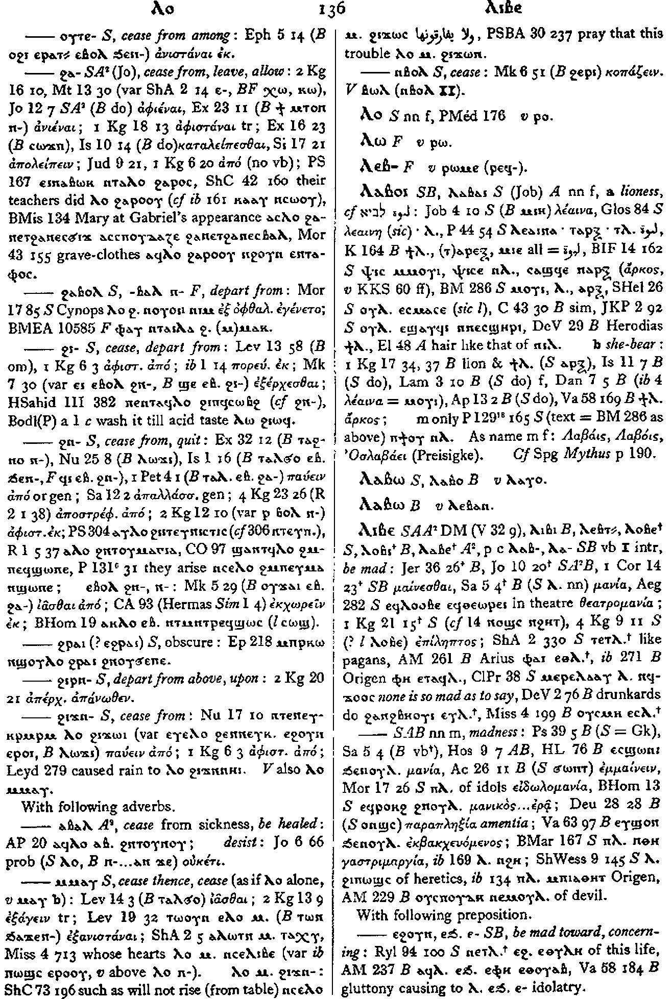

(verb)
intr:
― cease, stop [παυειν, κοπαζειν, αφισταναι]
― cease, be ended, healed, of sickness [ιασθαι, υγιαζειν]
― followed by coordinated vb, cease to do, be
tr (refl ?):
― cease, stop [παυειν, κοπαζειν, αφισταναι]
― cease, be ended, healed, of sickness [ιασθαι, υγιαζειν]
― followed by coordinated vb, cease to do, be
tr (refl ?):
(S, sA)
ⲗⲟ
(S, F) ⲗⲁ
(S, sA) imperative: ⲁⲗⲟⲕ, ⲁⲗⲱⲧⲛ
(S, sA) imperative: female: ⲁⲗⲟ
(S, F) ⲗⲁ
(S, sA) imperative: ⲁⲗⲟⲕ, ⲁⲗⲱⲧⲛ
(S, sA) imperative: female: ⲁⲗⲟ
| With following preposition:4339 | Crum: 135b | ||||||||
| (S) ― ⲉ- | cease from, leave [αφιεναι]4340 | ||||||||
| (S) ― ⲛ- | cease, recede from4341 | ||||||||
| (S) ― ⲟⲩⲃⲉ- | cease from opposing4342 | ||||||||
| (S) ― ⲟⲩⲧⲉ- | cease from among4343 | Crum: 136a | |||||||
| (S, sA) ― ϩⲁ- | cease from, leave, allow [αφιεναι, ανιεναι, αφισταναι]4344 | ||||||||
| (S)
― ϩⲁⲃⲟⲗ-
(F) ― ϩⲁⲃⲁⲗ ⲛ- |
depart from4345 | ||||||||
| (S) ― ϩⲁϩⲧⲛ- | leave with (?)8865 | ||||||||
| (S) ― ϩⲓ- | cease, depart from4346 | Crum: 136a | |||||||
| (S) ― ϩⲛ- | cease from, quit4347 | ||||||||
| (S) ― ⲉⲃⲟⲗ ϩⲛ-, ― ⲉⲃⲟⲗ ⲛ- | 5577 | ||||||||
| (S) ― ϩⲣⲁⲓ {? ⲉϩⲣⲁⲓ} | obscure4348 | ||||||||
| (S) ― ϩⲓⲣⲛ- | depart from above, upon4349 | ||||||||
| (S) ― ϩⲓϫⲛ- | cease from4350 | ||||||||
| With following adverb:4351 | |||||||||
| (sA) ― ⲁⲃⲁⲗ | cease from sickness, be
healed
desist4352 |
||||||||
| (S) ― ⲙⲙⲁⲩ | cease thence, cease [ιασθαι, εξαγειν]4353 | ||||||||
| ⲗⲟ ⲙⲙⲁⲩ. ϩⲓϫⲛ- | 5578 | ||||||||
| (S) ― ⲛⲃⲟⲗ | cease [κοπαζειν]4354 | Crum: 136b | |||||||
Crum: 135,136

135

136
Dawoud: 125b-126b

125

126